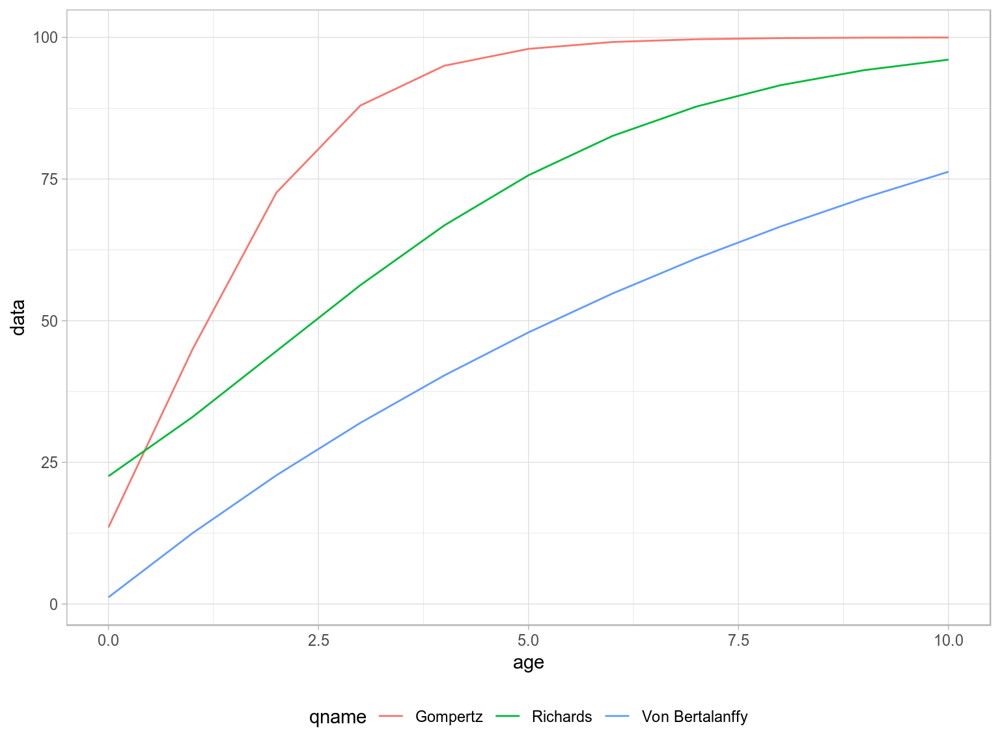
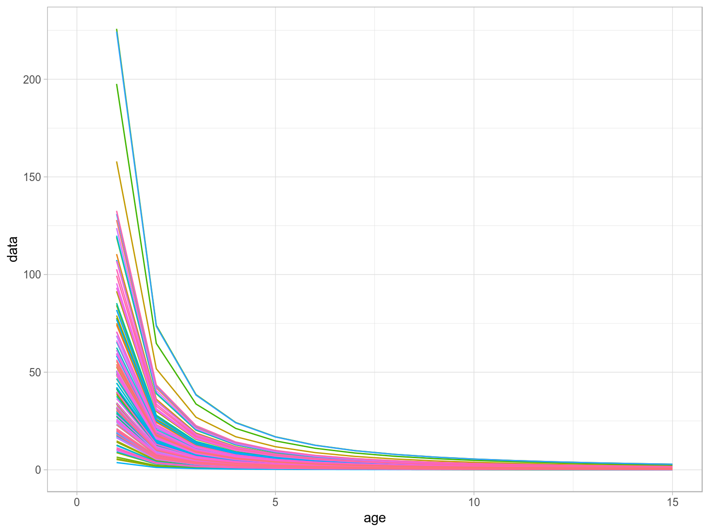
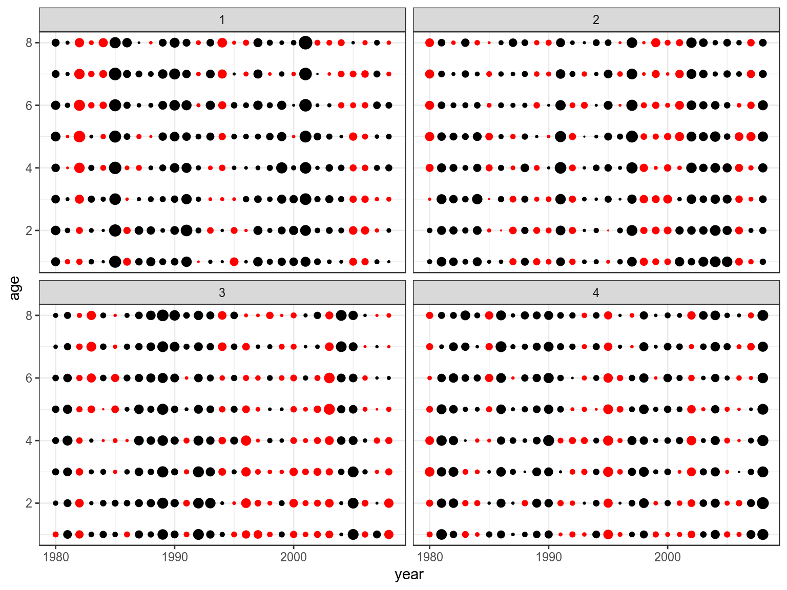
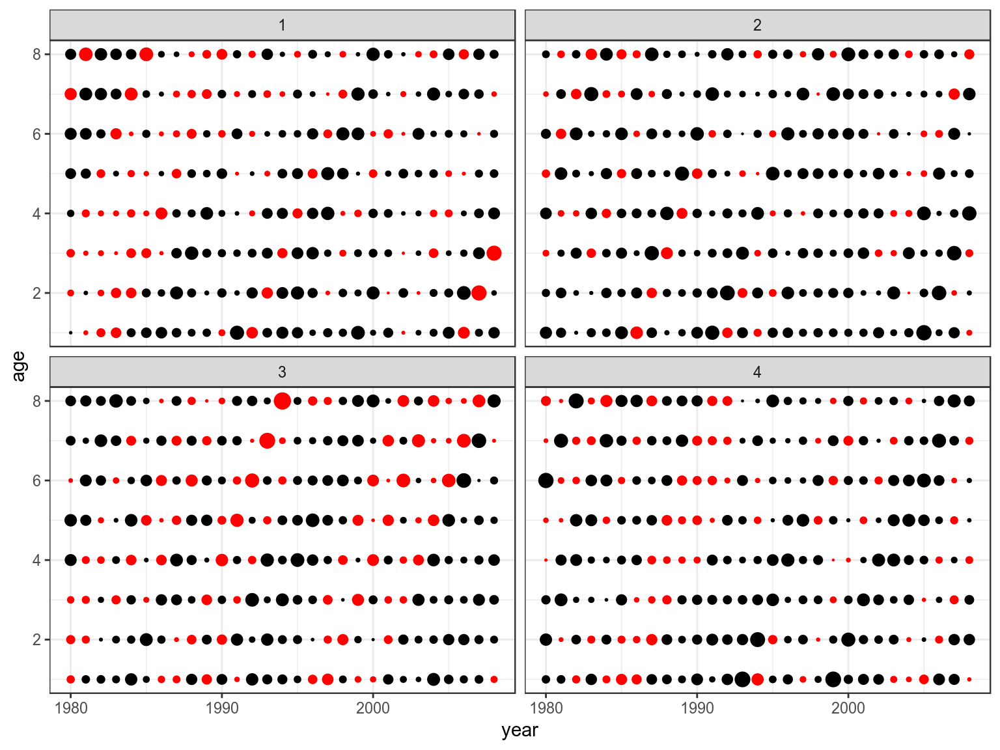
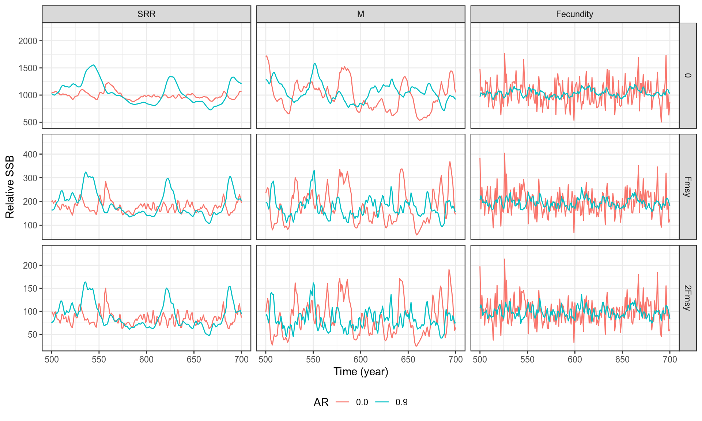
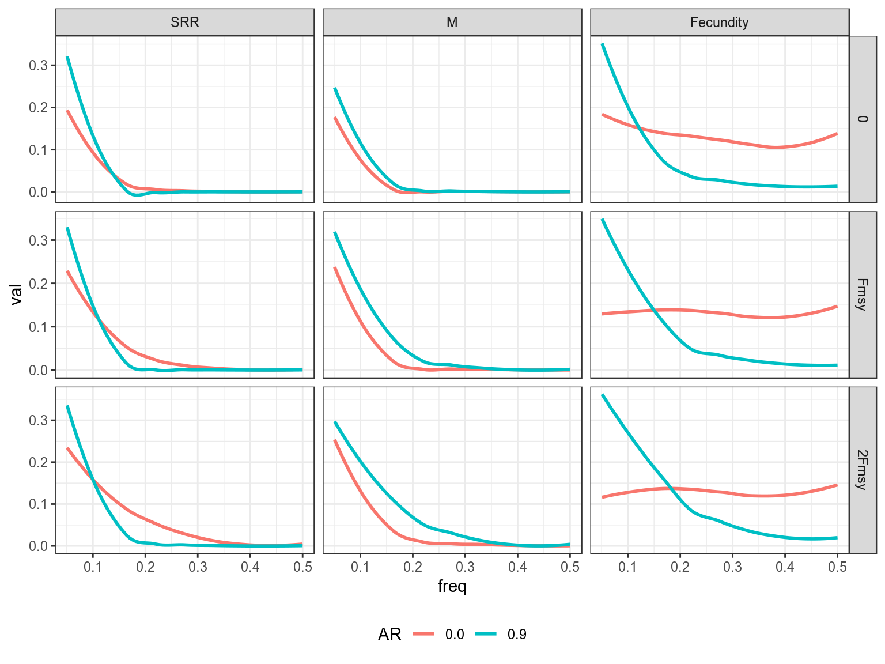
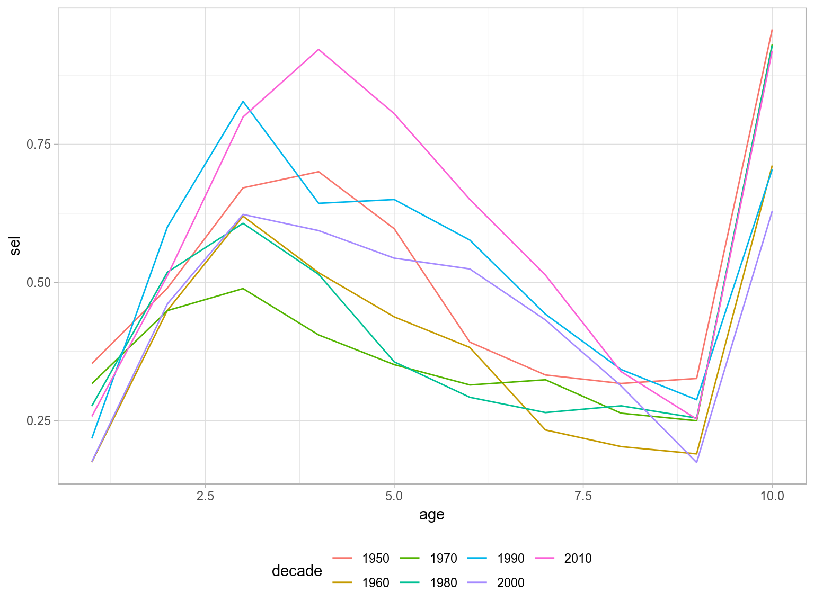

Life History Relationships
Life history traits include growth rate; age and size at sexual maturity; the temporal pattern or schedule of reproduction; the number, size, and sex ratio of offspring; the distribution of intrinsic or extrinsic mortality rates (e.g., patterns of senescence); and patterns of dormancy and dispersal. These traits contribute directly to age-specific survival and reproductive functions.1 The FLife package has a variety of methods for modelling life history traits and functional forms for processes for use in fish stock assessment and for conducting Management Strategy Evaluation (MSE).
These relationships have many uses, for example in age-structured population models, functional relationships for these processes allow the calculation of the population growth rate and have been used to to develop priors in stock assesments and to parameterise ecological models.
The FLife package has methods for modelling functional forms, for simulating equilibrium FLBRP and dynamic stock objects FLStock.
Packages
FLife, as with all FLR packages, is designed to use and augment a variety of other packages, e.g. ggplot2 for plotting
library(ggplot2)
library(GGally)reshape and plyr for data manipulation
library(reshape)
library(plyr)as well as the other FLR packages
library(FLCore)
library(ggplotFL)
library(FLBRP)
library(FLasher)
#library(FLAssess)and those such as popbio for analysing age or stage based population matrix models.
library(popbio)Quick Start
This section provide a quick way to get running and overview of what functions are available, their potential use, and where to seek help. More details are given in later sections.
The simplest way to obtain FLife is to install it from the FLR repository via the R console:
install.packages("FLife", repos = "http://flr-project.org/R")See help(install.packages) for more details.
After installing the FLife package, you need to load it
library(FLife)There is an example teleost dataset used for illustration and as a test dataset, alternatively you can load your own data.
data(teleost)The dataset contains life history parameters for a range of bony fish species and families, i.e. von Bertalanffy growth parameters (\(L_{\infty}, k, t_0\)), length at 50% mature (\(L_{50}\)), and the length weight relationship (\(a, b\)).
When loading a new dataset it is always a good idea to run a sanity check e.g.
is(teleost)[1] "FLPar" "array" "structure" "vector" The teleost object can be used to create vectors or other objects with values by age using FLife methods, e.g. to construct a growth curve for hutchen (Hucho hucho)
vonB(1:10,teleost[,"Hucho hucho"]) [1] 29.0 40.8 51.5 61.1 69.9 77.8 84.9 91.4 97.3 102.6Plotting
Plotting is done using ggplot2 which provides a powerful alternative paradigm for creating both simple and complex plots in R using the Grammar of Graphics2 The idea of the grammar is to specify the individual building blocks of a plot and then to combine them to create the desired graphic3.
The ggplot methods expects a data.frame for its first argument, data (this has been overloaded by ggplotFL to also accept FLR objects); then a geometric object geom that specifies the actual marks put on to a plot and an aesthetic that is “something you can see” have to be provided. Examples of geometic Objects (geom) include points (geom_point, for scatter plots, dot plots, etc), lines (geom_line, for time series, trend lines, etc) and boxplot (geom_boxplot, for, well, boxplots!). Aesthetic mappings are set with the aes() function and, examples include, position (i.e., on the x and y axes), color (“outside” color), fill (“inside” color), shape (of points), linetype and size.
age=FLQuant(1:20,dimnames=list(age=1:20))
len=vonB(age,teleost)
ggplot(as.data.frame(len))+
geom_line(aes(age,data,col=iter))+
theme(legend.position="none")Von Bertalanffy growth curves.
Methods
Life History Parameters
Relationship between life history parameters in the teleost dataset.
Growth
Consider the von Bertalanffy growth equation
\[ L_t = L_\infty (1 - e^{(-kt-t_0)})\]
where \(L_t\) is length at time t, \(L_\infty\) the asymptotic maximum length, \(k\) the growth coefficient, and \(t_0\) the time at which an individual would, if it possible, be of zero length.
As \(L_\infty\) increases \(k\) declines. in other words at a given length a large species will grow faster than a small species. for example Gislason, Pope, et al. (2008) proposed the relationship
\[k=3.15L_{\infty}^{-0.64}\]
There also appears to be empirical relationship between \(t_0\) and \(L_{\infty}\) and \(k\) i.e.
\[log(-t_0) = -0.3922 - 0.2752 log(L_{\infty}) - 1.038 log(k)\]
Therefore for a value of \(L_{\infty}\) or even \(L_{max}\) the maximum size observered as \(L_{\infty}=0.95L_{max}\) then all the growth parameters can be recovered.
Maturity
There is also a relationship between \(L_{50}\) the length at which 50% of individuals are mature
\[l_{50}=0.72L_{\infty}^{0.93}\]
and even between the length weight relationship
\[W=aL^b\]
Natural Mortality
For larger species securing sufficient food to maintain a fast growth rate may entail exposure to a higher natural mortality Gislason, Daan, et al. (2008). While many small demersal species seem to be partly protected against predation by hiding, cryptic behaviour, being flat or by possessing spines have the lowest rates of natural mortality Griffiths and Harrod (2007). Hence, at a given length individuals belonging to species with a high \(L_{\infty}\) may generally be exposed to a higher M than individuals belonging to species with a low \(L_{\infty}\).
\[ log(M) = 0.55-1.61log(L) + 1.44log(L_{\infty}) + log(k)\]
Functional forms
In FLIfe there are methods for creating growth curves, maturity ogives and natural mortality vectors, selection patterns, and other ogives. All these methods are used to create FLQuant objects.
Growth
gompertz, richards, vonB

Ogives
dnormal, knife, logistic, sigmoid
dnormal( age,FLPar(a1=4,sl=2,sr=5000))An object of class "FLQuant"
, , unit = unique, season = all, area = unique
year
age 1
0 0.06250
1 0.21022
2 0.50000
3 0.84090
4 1.00000
5 1.00000
6 1.00000
7 1.00000
8 1.00000
9 1.00000
10 1.00000
units: knife( age,FLPar(a1=4))An object of class "FLQuant"
, , unit = unique, season = all, area = unique
year
age 1
0 0
1 0
2 0
3 0
4 1
5 1
6 1
7 1
8 1
9 1
10 1
units: logistic(age,FLPar(a50=4,ato95=1,asym=1.0))An object of class "FLQuant"
, , unit = unique, season = all, area = unique
year
age 1
0 7.6733e-06
1 1.4577e-04
2 2.7624e-03
3 5.0000e-02
4 5.0000e-01
5 9.5000e-01
6 9.9724e-01
7 9.9985e-01
8 9.9999e-01
9 1.0000e+00
10 1.0000e+00
units: proportion sigmoid( age,FLPar(a50=4,ato95=1))An object of class "FLQuant"
, , unit = unique, season = all, area = unique
year
age 1
0 7.6733e-06
1 1.4577e-04
2 2.7624e-03
3 5.0000e-02
4 5.0000e-01
5 9.5000e-01
6 9.9724e-01
7 9.9985e-01
8 9.9999e-01
9 1.0000e+00
10 1.0000e+00
units: Natural Mortality
Many estimators have been propose for M, based on growth and reproduction, see Kenchington (2014).
Age at maturity \(a_{50}\)
Rikhter and Efanov
\[M=\frac{1.521}{a_{50}^{0.72}}-0.155\] Jensen
\[M=\frac{1.65}{a_{50}}\]
Growth
Jensen
\[M=1.5k\]
Griffiths and Harrod
\[M=1.406W_{\infty}^{-0.096}k^{0.78}\] where \(W_{\infty}=\alpha L_{\infty}^{\beta}\)
Djabali
\[M=1.0661L_{\infty}^{-0.1172}k^{0.5092}\]
Growth and length at maturity \(L_{50}\)
Roff
\[M=3kL_{\infty}\frac{(1-\frac{L_{50}}{L_{\infty}})}{L_{50}}\]
Rikhter and Efanov
\[M=\frac{\beta k}{e^{k(a_{50}-t_0)}-1}\] where \(a_{50}=t_0+\frac{log(1-\frac{L_{50}}{L_{\infty}})}{-k}\)
Varing by length
Gislason
\[M_L=1.73L^{-1.61}L_{\infty}^{1.44}k\]
Charnov
\[M_L=k\frac{L_{\infty}}{L}^{1.5}\]
Varying by weight
Peterson and Wroblewsk
\[M_W=1.28W^{-0.25}\]
Lorenzen
\[M_W=3W^{-0.288}\]
Senescence
Conversions
ages, len2wt, wt2len
, , unit = unique, season = all, area = unique
year
age 1957 1958 1959 1960 1961
1 1 1 1 1 1
2 2 2 2 2 2
3 3 3 3 3 3
4 4 4 4 4 4
5 5 5 5 5 5
6 6 6 6 6 6
7 7 7 7 7 7
8 8 8 8 8 8
9 9 9 9 9 9
10 10 10 10 10 10
[ ... 51 years]
year
age 2013 2014 2015 2016 2017
1 1 1 1 1 1
2 2 2 2 2 2
3 3 3 3 3 3
4 4 4 4 4 4
5 5 5 5 5 5
6 6 6 6 6 6
7 7 7 7 7 7
8 8 8 8 8 8
9 9 9 9 9 9
10 10 10 10 10 10 , , unit = unique, season = all, area = unique
year
age 1957 1958 1959 1960 1961
1 7.2432 7.4290 7.6631 7.2432 7.1791
2 10.0662 9.7610 10.1961 10.3540 9.9329
3 11.6225 12.1644 12.0046 12.1869 12.2760
4 13.4257 13.9591 13.8208 13.9591 14.5180
5 14.8125 14.4704 14.8730 15.3827 14.9926
6 16.9270 16.4112 16.7507 16.7388 16.9037
7 19.3008 17.9360 18.6626 18.4984 17.9567
8 18.9639 19.8150 19.0009 19.3633 19.0470
9 20.3601 19.9415 20.8623 20.3682 19.8234
10 20.9386 21.1419 20.7777 20.9386 20.8852
[ ... 51 years]
year
age 2013 2014 2015 2016 2017
1 7.5478 7.8297 6.2145 6.6943 6.8399
2 10.2281 10.1316 8.6624 8.7066 8.8366
3 11.5230 11.6471 10.6266 10.5373 10.9696
4 12.7650 12.6411 12.7445 12.5571 12.1869
5 14.7361 14.6123 14.0778 13.7507 13.9248
6 15.2406 15.6049 14.7820 14.8730 14.9330
7 16.3116 16.3740 15.5912 15.6049 15.3120
8 17.0196 16.9154 16.3241 16.3116 16.6069
9 18.7767 16.6069 16.6911 16.8569 16.8217
10 16.7269 18.3214 16.5948 17.2579 17.7263Generation of missing life history relationships
par=lhPar(FLPar(linf=100))
parAn object of class "FLPar"
params
linf k t0 a b ato95 a50
100.0000 0.1653 -0.1138 0.0003 3.0000 1.0000 4.3462
asym bg m1 m2 a1 sl sr
1.0000 3.0000 217.3564 -1.6100 5.3462 1.0000 5000.0000
s v
0.9000 1000.0000
units: cm There are relationships between the life history parameters and size, growth, maturation, natural mortality and productivity, as seen in the following.
Simulation
lhPar, lhEql
Function Forms
Population dynamics
Ecological
leslie, r
life history traits
An object of class "FLPar"
iters: 145
params
linf k t0
45.100000(28.02114) 0.246667( 0.17297) -0.143333( 0.13590)
l50 a b
22.100000(11.71254) 0.011865( 0.00776) 3.010000( 0.15271)
units: NA Natural Mortality

Stock recruitment
Fishery
Reference points
lopt, loptAge
Density Dependence
matdd, mdd
Parameter estination
moment, powh
Stationarity
rod
Random variables
rnoise
Reference points
data(ple4)
rodFn=FLife:::rodFn
refs(ple4)Simulation
Simulation of equilibrium values and reference points
eql=lhEql(par)
ggplot(FLQuants(eql,"m","catch.sel","mat","catch.wt"))+
geom_line(aes(age,data))+
facet_wrap(~qname,scale="free")+
scale_x_continuous(limits=c(0,15))Age-vectors of growthm natural mortality, maturity and selection pattern
Equilibrium curves and reference points.
An object of class "FLPar"
params
r rc msy lopt sk spr0 sprmsy
0.3938 0.1385 58.5952 63.6029 0.1972 0.1518 0.0333
units: NA NA NA NA NA NA NA Creation of FLBRP objects
Stock recruitment relationships
bevholt \(r = \frac{aS}{b + ssb}\)
ricker \(r = aSe^{-bS}\)
cushing \(r=aS^b\)
Stock recruitment relationships for a steepness of 0.75 and vigin biomass of 1000
Production curves, Yield v SSB, for a steepness of 0.75 and vigin biomass of 1000.
Density Dependence
Modelling density dependence in natural mortality and fecundity.
data(teleost)
par=teleost[,"Hucho hucho"]
par=lhPar(par)
hutchen=lhEql(par)
scale=stock.n(hutchen)[,25]%*%stock.wt(hutchen)
scale=(stock.n(hutchen)%*%stock.wt(hutchen)%-%scale)%/%scale
m=mdd(stock.wt(hutchen),par=FLPar(m1=.2,m2=-0.288),scale,k=.5)
ggplot(as.data.frame(m))+
geom_line(aes(age,data,col=factor(year)))+
theme(legend.position="none")+
scale_x_continuous(limits=c(0,15))
Density Dependence in M
scale=stock.n(hutchen)[,25]%*%stock.wt(hutchen)
scale=(stock.n(hutchen)%*%stock.wt(hutchen)%-%scale)%/%scale
mat=matdd(ages(scale),par,scale,k=.5)
ggplot(as.data.frame(mat))+
geom_line(aes(age,data,col=factor(year)))+
theme(legend.position="none")+
scale_x_continuous(limits=c(0,15))Density Dependence in M
Noise
Methods to simulate random noise with autocorrelation, e.g. by age or cohort 

Random Noise in R, M and Mat
AR Noise in R, M and Mat


Cohort Effects

Estimation
Life history parameters can also be used to estimate quantities of use in stock assessment
Beverton and Holt (1956) developed a method to estimate life history and population parameters length data. e.g.
\[\begin{equation}Z=K\frac{L_{\infty}-\overline{L}}{\overline{L}-L^\prime} \end{equation}\]Based on which Powell (1979) developed a method, extended by Wetherall, Polovina, and Ralston (1987), to estimate growth and mortality parameters. This assumes that the right hand tail of a length frequency distribution was determined by the asymptotic length \(L_{\infty}\) and the ratio between Z and the growth rate k.
The Beverton and Holt methods assumes good estimates for K and \(L_{\infty}\), while the Powell-Wetherall method only requires an estimate of K, since \(L_{\infty}\) is estimated by the method as well as Z/K.These method therefore provide estimates for each distribution of Z/K, if K is unknown and Z if K is known.
%As well as assuming that growth follows the von Bertalanffy growth function, it is also assumed that the population is in a steady state with constant exponential mortality, no changes in selection pattern of the fishery and constant recruitment. In the Powell-Wetherall method \(L^\prime\) can take any value between the smallest and largest sizes. Equation 1 then provides a series of estimates of Z and since
Therefore plotting \(\overline{L}-L^\prime\) against \(L^\prime\) therefore provides an estimate of \(L_{\infty}\) and Z/K
Plotting \(\overline{L}-L^\prime\) against \(L^\prime\) provides an estimate of \(L_{\infty}\) and Z/k, since \(L_{\infty}=-a/b\) and \(Z/k=\frac{-1-b}{b}\). If k is known then it also provides an estimate of Z ( ).
age obs hat sel
1 1 42703 263252 0.0194
2 2 40141 161176 0.0298
3 3 79353 98680 0.0962
4 4 56560 60416 0.1119
5 5 31888 36990 0.1031
6 6 10988 22647 0.0580
Catch curve analysis
data(ple4)
ctc=as.data.frame(catch.n(ple4))
ctc=ddply(ctc,.(year), with, cc(age=age,n=data))
ctc=ddply(transform(ctc,decade=factor(10*(year%/%10))),.(decade,age),with,data.frame(sel=mean(sel)))
ggplot(ctc)+
geom_line(aes(age,sel,colour=decade))
More Information
- You can submit bug reports, questions or suggestions on
FLifeat theFLifeissue page,4 or on the FLR mailing list. - Or send a pull request to https://github.com/lauriekell/FLife/
- For more information on the FLR Project for Quantitative Fisheries Science in R, visit the FLR webpage.5
- The latest version of
FLifecan always be installed using thedevtoolspackage, by calling
library(devtools)
install_github("flr/FLife")`
Software Versions
- R version 3.5.1 (2018-07-02)
- FLCore: 2.6.10
- FLPKG:
- Compiled: Wed Dec 5 08:37:25 2018
- Git Hash: 2e0d9af
Acknowledgements
This vignette and the methods documented in it were developed under the MyDas project funded by the Irish exchequer and EMFF 2014-2020. The overall aim of MyDas is to develop and test a range of assessment models and methods to establish Maximum Sustainable Yield (MSY) reference points (or proxy MSY reference points) across the spectrum of data-limited stocks.
References
Beverton, R.J.H., and S.J. Holt. 1956. “Review of Method for Estimating Mortality Rates in Exploited Fish Populations, with Special Reference to Sources of Bias in Catch Sampling.” Rapports et Proces-Verbaux. 140 (1): 67–83.
Gislason, H., N. Daan, JC Rice, and JG Pope. 2008. “Does Natural Mortality Depend on Individual Size.” ICES.
Gislason, H., J.G. Pope, J.C. Rice, and N. Daan. 2008. “Coexistence in North Sea Fish Communities: Implications for Growth and Natural Mortality.” ICES J. Mar. Sci. 65 (4): 514–30.
Griffiths, David, and Chris Harrod. 2007. “Natural Mortality, Growth Parameters, and Environmental Temperature in Fishes Revisited.” Canadian Journal of Fisheries and Aquatic Sciences 64 (2). NRC Research Press: 249–55.
Kenchington, Trevor J. 2014. “Natural Mortality Estimators for Information-Limited Fisheries.” Fish and Fisheries 15 (4). Wiley Online Library: 533–62.
Powell, David G. 1979. “Estimation of Mortality and Growth Parameters from the Length Frequency of a Catch [Model].” Rapports et Proces-Verbaux Des Reunions 175.
Wetherall, JA, JJ Polovina, and S. Ralston. 1987. “Estimating Growth and Mortality in Steady-State Fish Stocks from Length-Frequency Data.” ICLARM Conf. Proc, 53–74.
http://www.oxfordbibliographies.com/view/document/obo-9780199830060/obo-9780199830060-0016.xml↩
Wilkinson, L. 1999. The Grammar of Graphics, Springer. doi 10.1007/978-3-642-21551-3_13.↩